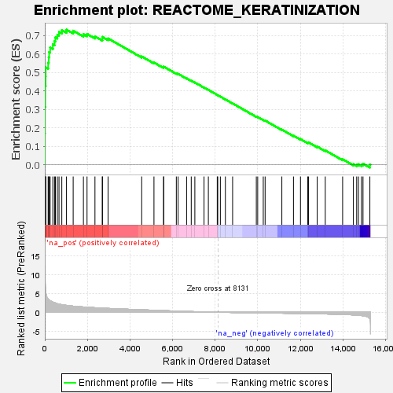
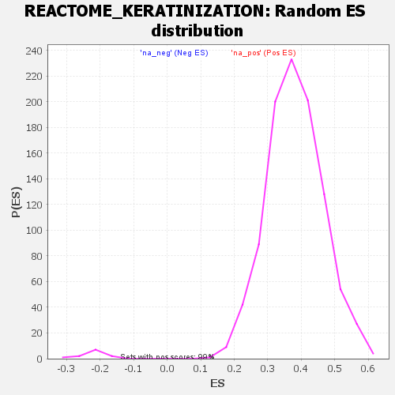

| Dataset | DGErankName |
| Phenotype | NoPhenotypeAvailable |
| Upregulated in class | na_pos |
| GeneSet | REACTOME_KERATINIZATION |
| Enrichment Score (ES) | 0.7312547 |
| Normalized Enrichment Score (NES) | 1.9165312 |
| Nominal p-value | 0.0 |
| FDR q-value | 0.008075183 |
| FWER p-Value | 0.106 |

| SYMBOL | RANK IN GENE LIST | RANK METRIC SCORE | RUNNING ES | CORE ENRICHMENT | |
|---|---|---|---|---|---|
| 1 | KRT5 | 1 | 18.616 | 0.1703 | Yes |
| 2 | KRT17 | 6 | 15.620 | 0.3130 | Yes |
| 3 | KRT6A | 21 | 12.505 | 0.4265 | Yes |
| 4 | KRT19 | 40 | 5.719 | 0.4777 | Yes |
| 5 | KRT18 | 43 | 5.458 | 0.5275 | Yes |
| 6 | DSC2 | 158 | 3.530 | 0.5523 | Yes |
| 7 | PERP | 185 | 3.343 | 0.5812 | Yes |
| 8 | ST14 | 204 | 3.288 | 0.6101 | Yes |
| 9 | KRT8 | 251 | 3.043 | 0.6349 | Yes |
| 10 | PRSS8 | 377 | 2.707 | 0.6515 | Yes |
| 11 | PKP2 | 458 | 2.529 | 0.6694 | Yes |
| 12 | PKP3 | 498 | 2.461 | 0.6894 | Yes |
| 13 | DSG2 | 590 | 2.260 | 0.7041 | Yes |
| 14 | JUP | 667 | 2.175 | 0.7190 | Yes |
| 15 | FURIN | 799 | 2.018 | 0.7289 | Yes |
| 16 | KRT7 | 1019 | 1.829 | 0.7313 | Yes |
| 17 | DSP | 1333 | 1.620 | 0.7255 | No |
| 18 | PKP4 | 1814 | 1.401 | 0.7069 | No |
| 19 | SPINK5 | 1984 | 1.340 | 0.7080 | No |
| 20 | KRT80 | 2356 | 1.204 | 0.6947 | No |
| 21 | PPL | 2703 | 1.101 | 0.6821 | No |
| 22 | KRT72 | 2705 | 1.100 | 0.6921 | No |
| 23 | CAPN1 | 2972 | 1.020 | 0.6840 | No |
| 24 | EVPL | 4552 | 0.649 | 0.5863 | No |
| 25 | KRT39 | 5128 | 0.518 | 0.5533 | No |
| 26 | DSG3 | 5579 | 0.424 | 0.5277 | No |
| 27 | DSG1 | 5586 | 0.422 | 0.5311 | No |
| 28 | DSG4 | 6178 | 0.299 | 0.4951 | No |
| 29 | KRT12 | 6262 | 0.283 | 0.4922 | No |
| 30 | KRT40 | 6660 | 0.212 | 0.4681 | No |
| 31 | DSC3 | 6879 | 0.178 | 0.4554 | No |
| 32 | KRT24 | 7048 | 0.147 | 0.4458 | No |
| 33 | TCHH | 7479 | 0.083 | 0.4183 | No |
| 34 | KRTAP11-1 | 7683 | 0.055 | 0.4055 | No |
| 35 | KRT20 | 8100 | 0.003 | 0.3782 | No |
| 36 | TGM5 | 8124 | 0.001 | 0.3767 | No |
| 37 | LORICRIN | 8247 | -0.014 | 0.3688 | No |
| 38 | KRTAP24-1 | 8482 | -0.040 | 0.3538 | No |
| 39 | DSC1 | 8822 | -0.077 | 0.3323 | No |
| 40 | KRT38 | 9936 | -0.180 | 0.2609 | No |
| 41 | KRTAP25-1 | 10000 | -0.185 | 0.2585 | No |
| 42 | LELP1 | 10262 | -0.204 | 0.2432 | No |
| 43 | LIPK | 10349 | -0.211 | 0.2395 | No |
| 44 | KAZN | 11135 | -0.269 | 0.1905 | No |
| 45 | LIPJ | 11681 | -0.312 | 0.1575 | No |
| 46 | TGM1 | 12010 | -0.342 | 0.1392 | No |
| 47 | KRT33B | 12353 | -0.374 | 0.1201 | No |
| 48 | PCSK6 | 12385 | -0.377 | 0.1216 | No |
| 49 | KRT35 | 12795 | -0.422 | 0.0986 | No |
| 50 | FLG | 13175 | -0.469 | 0.0780 | No |
| 51 | KRT14 | 13990 | -0.600 | 0.0301 | No |
| 52 | KRT10 | 14495 | -0.728 | 0.0037 | No |
| 53 | CAPNS1 | 14650 | -0.788 | 0.0008 | No |
| 54 | KRT84 | 14733 | -0.829 | 0.0030 | No |
| 55 | KRT79 | 14876 | -0.900 | 0.0019 | No |
| 56 | CASP14 | 14947 | -0.956 | 0.0061 | No |
| 57 | KLK13 | 15270 | -1.833 | 0.0017 | No |
